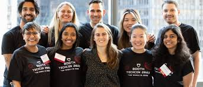

TechCon began in 2010 as a small meetup of local software developers in San Francisco. Over the years, it
has grown into an internationally recognized conference, attracting innovators, engineers, and thought
leaders from all over the world.
From its early focus on open-source collaboration, TechCon has expanded to include AI, cybersecurity,
quantum computing, and sustainability in tech. Each year builds on the last, creating a legacy of
forward-thinking conversations and groundbreaking announcements.
conference image
Mission
TechCon’s mission is to empower the global tech community through knowledge-sharing, innovation, and
inclusive dialogue.
We believe that technology is not just about code — it's about solving real problems and improving
lives.
At its core, TechCon promotes open collaboration, diversity in tech, ethical development, and
sustainable innovation. Our goal is to create a platform where developers, designers, researchers, and
entrepreneurs come together to shape the future — responsibly and creatively.

imge of peoble that went to the conference
Past Speakers
Over the past decade, TechCon has featured some of the most influential figures in the tech world:
Dr. Amina Farouk — AI researcher and advocate for ethical machine learning. Her keynote on "Bias and
Ethics in Artificial Intelligence" in 2021 sparked industry-wide conversations.
Carlos Mendes — Co-founder of a leading green tech startup. His talk on sustainable computing inspired
many young entrepreneurs to pursue eco-conscious development.
Lina Zhao — Renowned cybersecurity expert who led several panels on digital privacy. She is best known
for exposing vulnerabilities in major consumer devices and helping shape global security standards.